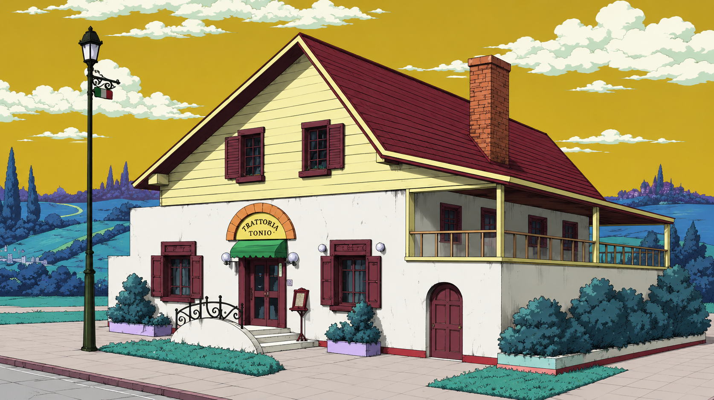

Diamond is Unbreakable began as a family-run trattoria in the heart of Naples, where the founders believed that a proper meal should do more than fill the stomach: it should restore the spirit, slow the pace of the day, and make people feel looked after. Over time, the restaurant became known for its quiet elegance, its seasonal menus, and the reputation of its chef, Tonio, whose dishes were prepared with the same care one gives to someone recovering from exhaustion, stress, or illness.
Tonio was never interested in simply serving food. He studied ingredients as if they were medicine: rich broths for strength, slow-cooked dishes for comfort, citrus and herbs for vitality, and carefully balanced plates designed to revive the body after hard work or emotional fatigue. Locals soon began to say that a meal here did not only satisfy hunger, but also eased tiredness, lifted the mood, and restored the energy needed to keep going. In the broader tradition of Italian trattorias, this was not a miracle, but a belief that great cooking and genuine hospitality can heal more than we think.
From the first course to the final dessert, every plate at Diamond is Unbreakable is made with patience, fresh ingredients, and a sense of ceremony. Our kitchen honors classic Italian tradition while embracing generous flavors, honest craftsmanship, and the idea that food has the power to comfort, nourish, and reconnect people with one another. Whether you come for a quiet evening, a shared meal with friends, or a moment of restoration after a long day, you will find a place at our table where both appetite and well-being are treated with care.